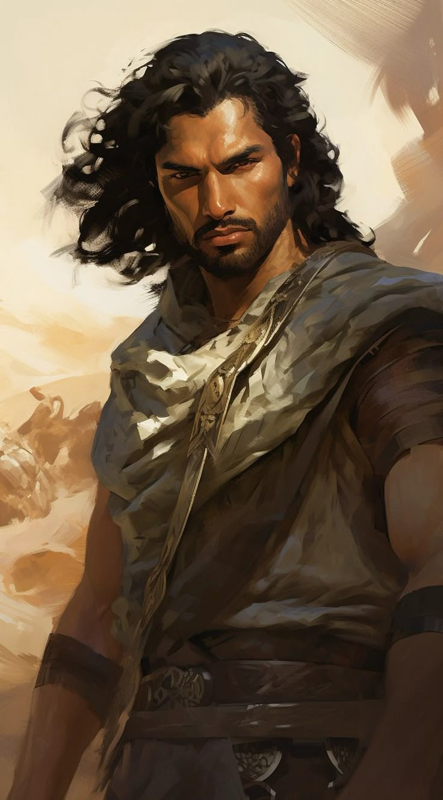
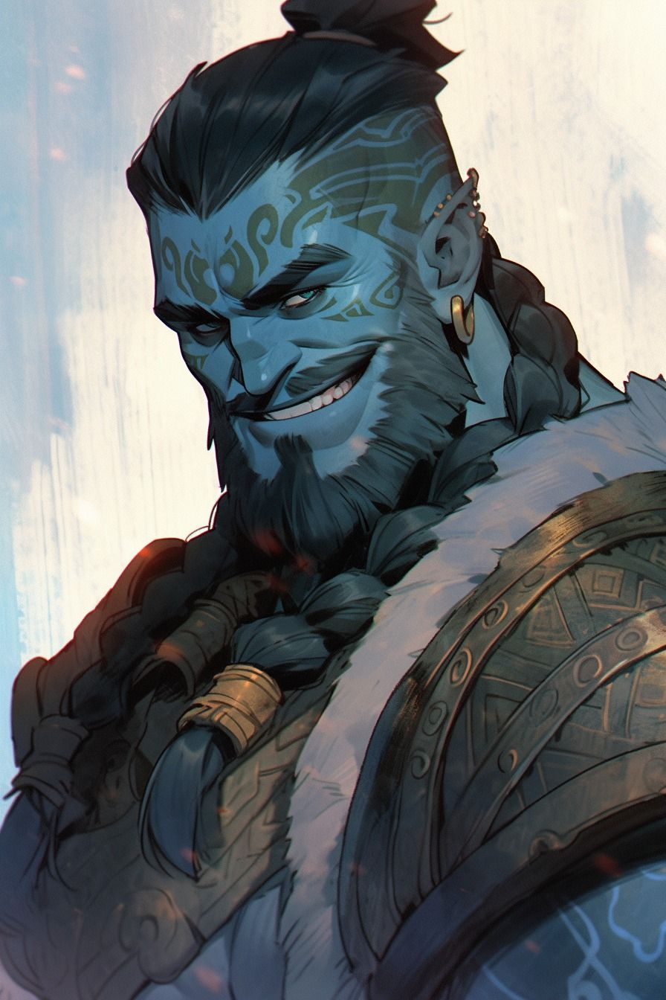

Zephyr

Barkın BAYRAM tarafından canlandırılmış ve oynanmıştır. Barkın'ın beşinci karakteridir. Druuthtikmorash Kilbarum, şana ve onura büyük önem veren Kilbarum Klanı'nın en güçlü iki savaşçısı olan Ulthanthul ve Liarrhor'un oğlu olarak dünyaya geldi. Klanın yeni döneminin sembolü olarak ilan edilen bu erkek bebeğe lider Krearexan tarafından Druuthtikmorash ismi verildi; bu isim onun güçlü, onurlu ve klana yakışır bir savaşçı olacağını temsil ediyordu. Annesi Liarrhor, onu sevgiyle büyütürken fazlasını hiç göstermedi. Babası Ulthanthul ise 3 yaşına kadar oğluyla pek ilgilenmedi; çünkü dragonborn geleneklerine göre erkek çocuk 3 yaşını doldurunca babanın görevi başlayacaktı.
Druuthtikmorash 3 yaşına bastığında babası onu alıp yetiştirmeye başladı. 12 yaşına kadar Ulthanthul'un yanında yetişen Druuthtikmorash, ona Yüce Ceddror'a yaraşır bir savaşçının nasıl olması gerektiğini öğrendi. Babası, klanları hakkında, Tanrı Ejder Ceddror hakkında ve kendi soyları hakkında hikayeler anlattı; gururun, onurun, vahşetin ve hiddetin ne olduğunu ve önemini aktardı. Hiddetin kontrol altında tutulduğunda ne kadar keskin bir silaha dönüşebileceğinden de sık sık bahsetti. Bu süreçte Nilthias adında çok yakın bir arkadaşı oldu; Ulthanthul'un olmadığı zamanlarda Nilthias ve onun babasıyla birlikte avlanmaya gider, öğrenme süreci asla aksamazdı.
12 yaşına geldiğinde klan lideri Krearexan tüm çocukları gruplara ayırarak ilk av görevlerini verdi. Druuthtikmorash, Nilthias ve bir başka çocukla birlikte bir dağ keçisi avlamaya gitti. Tam keçiye saldıracaklarken Druuthtikmorash onları durdurdu; sessizce ilerleyerek keçinin boynuna saldırdı ve onu hızlıca öldürdü. Nilthias şaşkınlıkla "Ona neden sessizce saldırdın?" diye sorduğunda Druuthtikmorash "O benim avımdı çünkü. Böylesi daha etkili oldu." diye yanıtladı. Nilthias "Ama mertçe değildi." diye çıkışınca sadece "Olsun." dedi. Bu olay klan liderine bildirildi ve Krearexan memnuniyetsiz bir şekilde onu affedip Ulthanthul ile özel bir konuşma gerçekleştirdi; ardından babası ona çok daha sert davranmaya başladı. Druuthtikmorash ise bu tepkiyi bir türlü anlamlandıramıyordu. Karşısındaki düşmana neden adil davranmalıydı ki? Aklındaki bu sorularla boğuşmaya devam etti...
15 yaşında, klanın büyük çoğunluğunun yokluğunda Druuthtikmorash aralarında Nilthias'ın da bulunduğu 4 kişiyle birlikte avlanmaya gitti. Başarılı bir avdan dönerlerken pusuya düşürüldüler. Haydut görünümlü 7 kişilik bir grupla kanlı bir savaş verdiler. Savaşın sonunda 3 arkadaşı yerde yatıyordu, Nilthias ise tek ayakta kalan kişiydi. Bir haydut Nilthias'ı yere serdiğinde son darbeyi indirecekken Druuthtikmorash dizlerinden son gücüyle fırlayarak haydudun ense köküne kısa kılıcını sapladı; kılıç boğazından çıktı. Nilthias gözleri pörtlemişti ve sadece "Ölmeyi yeğlerdim..." diyerek bayıldı. Hayal kırıklığına uğrayan Druuthtikmorash kendini yere attı. Hayatta olmadıkları sürece gerisinin ne önemi vardı ki?
Klana döndüklerinde lider Krearexan, babası Ulthanthul, annesi Liarrhor ve diğer dragonbornlar başlarında bekliyordu. Druuthtikmorash olanları eksiksiz anlattı; gerçeği gizlemeyi seçmedi, çünkü kendi gururuna göre yalan söylemek buna izin vermedi. Krearexan'ın gözlerindeki hayal kırıklığını ve öfkeyi görebiliyordu. Klan lideri sert bir konuşmanın ardından Yüce Babası Ceddror'un adıyla onu Kilbarum Klanı'ndan sürdüğünü ilan etti. Druuthtikmorash hiçbir şey söylemeden, kimsenin gözüne bakmadan ayağa kalktı ve eşyasız bir şekilde kapıya yürüdü. Dışarı çıkarken çok kısık bir sesle tek bir cümle mırıldandı: "Yüce baba Ceddror, beni affet..."
Ne yapacağını bilemeyen Druuthtikmorash kafası karışık, sadece ilerliyordu. Kendinden utanç duyuyordu ama pişman değildi; hayal kırıklığı yaşıyordu ama onlara kırgın da değildi. Dağlardan iyice uzaklaşarak Frosty Passage'ın kuzeydoğusundaki köye, ardından Frosty Passage'a vardı. Şehirde dikkat çektiğini fark eden Druuthtikmorash küçük bir han bulup avladığı hayvanların kürkleriyle ödeme yaptı. Ama uyku bir türlü gelmiyordu; gözlerini kapattığında ölen arkadaşlarının yüzleri, babasının küçümseyici bakışları, klan liderinin son sözleri ve Nilthias'ın bayılmadan önceki son cümlesi... Günler geçtikçe kabusa dönen uyku, daralıyormuş gibi hissettiren oda duvarları. Bir karar vermeliydi: ya dibi boylayacaktı, ya da harekete geçecekti. Harekete geçmeyi seçti. İçinden "Yüce baba Ceddror, affına sığınıyorum ama karşıma ufak bir umut kırıntısı çıkar." diyerek şehirden ayrıldı.
Wolf's Inn'e ulaştığında Druuthtikmorash 16 yaşındaydı. Cebinde neredeyse hiç para yoktu. Şehirde bir demircinin önünden geçerken durdu; içeri girdi, demirciyle göz göze geldiler. Demirci sessizliği bozarak "Burada çalışmak mı istiyorsun?" diye sordu. Şaşıran Druuthtikmorash'a demirci "Uzun bir yoldan gelmiş, duruşundan ödün vermeyen ama gözlerindeki umut ışığı sönmüş bir dragonborn görüyorum karşımda." dedi ve ona bir kısa kılıç uzatarak "Zamanı gelince ödersin." dedi. Druuthtikmorash kılıcı alıp parasını ödeyeceğine söz verdi. Tanımadığı biri ona bu iyiliği yapmış ve karşılığını bekliyordu. Bu, onun için yeterli bir nedendir; hâlâ kendisinden bir şeyler bekleyen birileri vardı. Bir tavernada iş sorunca, bir seyyar tüccarın bıraktığı çantaları getirme işini üstlendi. İşin sonunda parasını alıp güzel bir yemek yedi. O gece tavernada insanların eğlendiğini görerek önemli bir şeyin farkına vardı: işlerle oyalanmak zihnini meşgul ediyor, kafasındaki sesleri baskılıyordu. Pas tutmamayı tercih etti.
Wolf's Inn'de tavernadan iş almaya başladı: anahtarını unutan birinin kapısını açtı, kaybolan eşyaları bulup geri getirdi, eşinden şüphelenen bir adamın karısını takip etti, yaşlı bir pazarcı kadının erzaklarını çalan kişiyi bulup yüzünü tanınmayacak hale getirdi. Bir gece ıssız bir sokakta önünü kesen ve kendini tavernada daha önce gördüğü bir adam, ona çıkışarak kılıç çekti. Druuthtikmorash "Buna gerek yok." dedi; ama adam ısrarcı olunca silahını çıkardı, adamın ilk saldırısını bekledi ve dengesi bozuk sarhoş adamın kolunun altından geçerek ense köküne kılıcını sapladı. Adam hareketsiz yere düştü. Arkasından bir ses duydu: "Vay anam vay! O koca cüssenle bu kadar estetik bir şekilde adamın yanından estin geçtin, aynı bir Zephyr gibi." Döndüğünde Hassan adında biriyle karşılaştı. Hassan, onun potansiyelini görmüştü; kendisine dövüş bilgisi öğreteceğini, karşılığında Druuthtikmorash'ın ona yardım edeceğini ve parayı bölüşeceklerini teklif etti. Biraz düşünen Druuthtikmorash elini uzattı. "Ben varım." Hassan sırıtarak "O zaman anlaştık, peki gerçekten adın ne?" diye sordu. Druuthtikmorash sırıtarak "Zephyr." dedi.
İkili uzun süre birlikte çalıştı. Hassan ona gerçekten bildiği şeyleri gösteriyor ve öğretiyordu. Karşılığında Zephyr hem yaklaşmaya çalışanlara gözdağı veriyor hem de işlerinde yardımcı olup parasını kazanıyordu. Etrafta zamanla Zephyr ismiyle tanındı Druuthtikmorash; bu sayede eski hayatını, klanını biraz daha kolay unutabileceğini düşünmüştü. Bir gün antrenman sırasında bazı hareketleri beceremeyince öfkesiyle etrafı dağıtmaya başladı. Yaklaşık bir saat süren öfke krizinin ardından Hassan'a "Asla senin kadar iyi olamayacağım." dedi. Hassan bir süre sessiz kaldıktan sonra yanıtladı: "Benim gibi olmana gerek yok ki. Kendin ol, Zephyr ol. Özüne dönerek de bunu yapabilirsin, ölümcüllüğünü ve öfkeni birleştir, vücudun buna çok müsait." Bu cevap sorusunu yanıtlamıyordu ama bir yandan da hoşuna gitmişti. Bu konuşmanın ardından Zephyr kendi içinde özüne inmeye başladı.
Zamanla Hassan ve Zephyr birbirlerini kardeş gibi görmeye başladılar; ikisi de birbirlerine geçmişlerini hiç anlatmamışlardı, çünkü sormamışlardı. İkisinin de umrunda değildi. Bir gece uyurken Zephyr garip bir rüya gördü: hiçliğin ortasında uzaktaki bir silüetten gelen bir ses duydu ve tek bir cümleyi anlayabildi: "Biz seni koruyacağız." Sabah Hassan bunu "Cadının teki lanetledi herhalde." diyerek güldü. Belirli bir süre sonra bu olay unutulup gitti.
21 yaşında, kazandıkları parayı tavernada yedikleri bir gecenin sabahında Hassan'ın yatağının üzerinde bir not buldu. Not şunu söylüyordu: "Sana bir açıklama yapmadığım için üzgünüm Zephyr. Sevdiğim insanların başları belada olabilir ve bu bok seni bulaştırmak istemeyeceğim bir bok. Beni anlayışla karşılamanı beklemiyorum, sadece bana karşı kırgın olma. Yine de bir daha karşılaşacağımızı biliyorum, o zaman sana her şeyi anlatacağım. Üzgünüm. -Hassan" Sinirli bir şekilde duvara yumruk attı Zephyr. Arkadaşı olarak gördüğü tek kişi onu terk etmişti. Sinirliydi, endişeliydi, arkadaşına yardım edemeyecek kadar yetersiz olduğunu düşünüp kendini suçluyordu. Gece yarısına kadar şehri arayıp etrafı soruşturdu ama Hassan'ı gören kimse yoktu. O gece yeniden aynı silüeti rüyasında gördü; bu sefer ses şunu söylüyordu: "Kim olduğunu hatırla." Uyandığında kafası çok karışıktı. Artık hem rüyasında gördüklerini çözmeliydi, hem de Hassan'ın nereye gittiğini bulmalıydı. Kendine birkaç gün tanıdı; ardından tüm bu soruların yanıtını arayacaktı...

